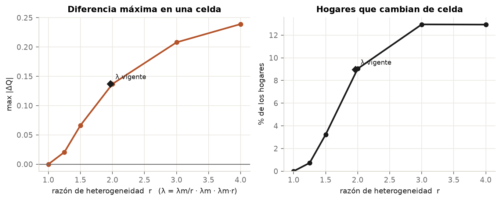
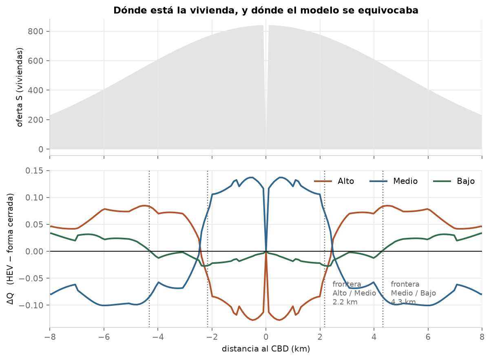
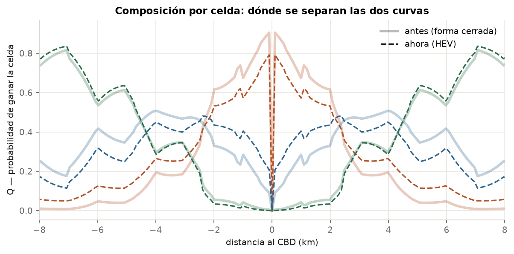
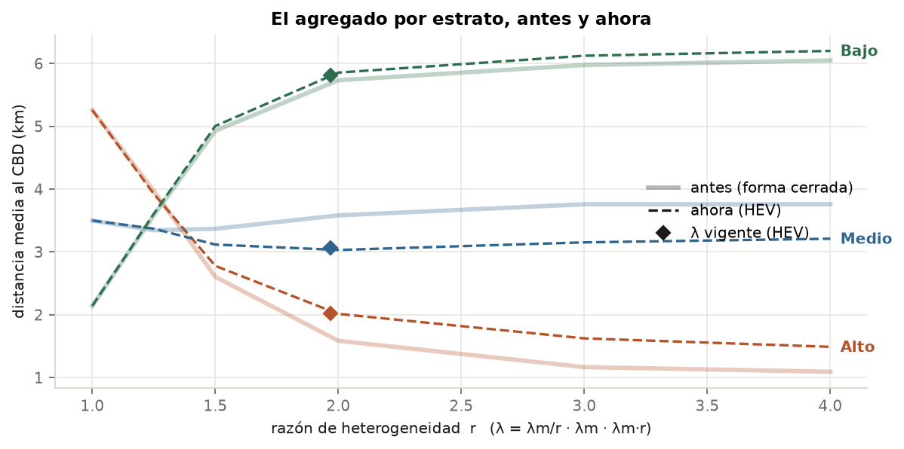

Los mismos datos, los mismos heterogéneos, resueltos con la forma cerrada —lo que hacía el simulador— y con la subasta heteroscedástica. La diferencia entre las dos es el impacto de aplicar la formulación correcta, sin recalibrar nada.
Hasta que se implementó el HEV, el módulo de uso de suelo tenía una limitación conocida: los tenían que ser iguales. Si se los cambiaba, el resultado se movía — pero ese movimiento no era atribuible a la diferencia de utilidad marginal del ingreso, sino a que se estaba aplicando la forma cerrada a pujas que ya no eran homoscedásticas. Un modelo distinto del que se creía estar corriendo.
Este documento mide cuánto cuesta esa diferencia. Dos corridas de la misma ciudad, con los mismos , , , , y la misma accesibilidad :
| solver | qué es | |
|---|---|---|
| antes | solve_logit |
La forma cerrada, con una precisión en dinero común a los tres estratos, . Es lo que hacía el simulador hasta el commit del HEV: ciudad.py llamaba solve_logit(..., beta=cfg.beta, ...), y esa función aplica beta tal cual sobre la puja en dinero. Entonces λ valía 1 en los tres estratos, así que . |
| ahora | solve_subasta |
Con heterogéneos despacha al HEV. |
No hace falta desenterrar código viejo: solve_logit
conservó su semántica a través de D-31 —se la dejó intacta a
propósito, por ser la referencia homoscedástica con la que se demuestra
D-08—, así que sigue aplicando su beta_i como precisión en dinero,
igual que antes. Y los tests que fijan esa función siguen pasando.
Lo que sí cambió desde entonces es la calibración: hoy λ está en útiles por peso (D-34) y μ = 1/√44 es una precisión en útiles, así que la conversión honesta a dinero es , la ec. (4.3) de Martínez (D-31). La forma cerrada sólo admite un , y hay que elegirlo: se toma el del estrato medio, , o sea un ruido de puja de 10.354 $ para los tres. Es una elección; con otro común los números cambian, y por eso el barrido se ancla en r = 1, donde la elección no importa porque ahí los dos modelos son el mismo.
Por qué un barrido y no un caso. No sabemos el verdadero. Lo que sí se puede afirmar es cómo crece el impacto con la heterogeneidad, así que se barre la razón r con , donde es el λ vigente del estrato medio. En r = 1 los dos modelos son el mismo y sirve de ancla: esa fila tiene que dar cero exacto, y da, lo que confirma que la comparación mide el modelo y no una diferencia de implementación. Se agrega la fila vigente: los tres λ de la app (0,320 / 0,641 / 1,241 ×10⁻³), que no son exactamente geométricos; su razón equivalente es 1,97. Son |bcosto| de transporte (D-34), y desde el schema v6 el núcleo los deriva de la demanda en vez de guardar una copia (D-41).
La utilidad marginal del ingreso es decreciente en el ingreso —al rico un peso adicional le sirve menos—, así que . Martínez lo dice explícitamente (p. 77) al derivar la disposición a pagar, y de ahí concluye que la varianza de la disposición a pagar crece con el ingreso. La forma cumple esa monotonía en todas las filas.
No es una formalidad: es la configuración que el HEV existe para poder evaluar. La forma cerrada exige varianzas iguales, o sea que literalmente no puede representar el caso realista sin cometer el error que este documento mide.
Y el ancla lo muestra a su manera. En r = 1 —λ común— la ciudad sale invertida: el estrato alto a 5,3 km del CBD y el bajo a 2,1. Con α = 1 común y λ común, el valor del tiempo α/λ es el mismo para los tres, y la puja en pesos del alto es la más plana porque su logsum de transporte en útiles lo es. Alonso se recupera con λ heterogéneo: en r = 1,25 el orden todavía es plano (3,9 / 3,4 / 3,6 km) y en r = 1,5 ya es el de Alonso (Fig. 04). O sea que la fila ancla es matemática, no una ciudad realista, y la heterogeneidad de λ no es un refinamiento: es lo que ordena la ciudad. Barrer por encima de los otros —económicamente al revés— no se hace, por la misma razón.
Antes de mirar números conviene tener las dos expresiones a la vista, y comprobar que el código implementa cada una. Lo que sigue está cotejado contra las fuentes, no contra la memoria.
En _solve_fixed_point:
log_q = log_H + beta_i * (score[:, i] - u_bar - p[i])
Q[:, i] = np.exp(log_q - logsumexp(log_q))Coincide término a término, con dos cosas que conviene declarar:
log_p = logsumexp(np.log(H_arr)[:, None] + beta_i * (score - u_bar[:, None]), axis=0)
p = log_p / beta_i # la moda, p_i
p_esperado = p + np.euler_gamma / beta_i # p*_i, lo que se devuelveLa rama cerrada calcula , el parámetro de localización del máximo de las pujas, y le suma : devuelve el precio esperado , la ec. (4.27) completa. El HEV devuelve el mismo concepto, el máximo esperado, integrado directamente. Hasta sep-2026 la rama cerrada devolvía sólo la moda, y el nivel de precios saltaba exactamente al pasar de una rama a la otra; ahora las dos devuelven lo mismo.
Con el precio unificado, la brecha que queda entre las dos ramas no es un artefacto de definición: la explica otra cosa.
| λ ×10⁻³ (a/m/b) | rango de p ($) | brecha medida ($) | ūHEV − ūcerrada ($) |
|---|---|---|---|
| 0,641 / 0,641 / 0,641 | 139.197 | 0 | [0 · 0 · 0] |
| 0,513 / 0,641 / 0,801 | 138.177 | 29.046 | [0 · −28.887 · −51.700] |
| 0,320 / 0,641 / 1,281 | 142.886 | 116.444 | [0 · −114.521 · −172.643] |
| 0,320 / 0,641 / 1,241 (vigente) | 144.021 | 116.470 | [0 · −114.570 · −170.812] |
| 0,160 / 0,641 / 2,563 | 188.467 | 341.066 | [0 · −336.991 · −423.402] |
La brecha sigue a la última columna. Con el precio de la rama cerrada sin , como era antes, cada brecha era 5.976 $ mayor. La brecha es la media de sobre las celdas con oferta; el rango es el de .
El nivel absoluto del precio no está determinado por el modelo —en ninguna de las dos ramas—. Depende de la normalización , que es una convención arbitraria: se ve en la fórmula que correr todos los en c corre todos los en . Las dos ramas normalizan en el mismo lugar, pero llegan a y distintos —porque son modelos distintos— y el nivel se corre con eso.
Lo que fijaría el nivel de verdad es la cuarta condición de equilibrio de Alonso —precio en el borde igual a la renta agrícola—, que está documentada y no implementada. Sin ella el precio queda definido salvo una constante, y compararlo entre modelos no significa nada.
El gradiente sí sirve, y por una razón concreta: es invariante a esa constante. Se verifica más abajo — en la calibración vigente difiere entre ramas un 1,4 %.
Es la (2.4b) del cap. 2 del libro, en letras de Martínez: es la localización de la puja de h en i, su precisión y s la variable de integración, con peso Gumbel estándar. Train la escribe para un decisor que elige entre alternativas:
con la traducción ,
y
. Dos letras de Train chocan con las de
Martínez: su θ es una escala, mientras que la
de Martínez es la puja aleatoria; y su w
es la variable de integración, mientras que
es la disposición a pagar. El código sigue a Train,
con theta = y _W = s.
En q_hev:
arg = (loc[h] - loc[g])[None, :] + theta[h] * _W[:, None]
np.multiply(z, np.exp(-np.exp(-np.clip(arg / theta[g], -_TOPE, _TOPE))), out=z)
acum[h] = _PESO @ z # _PESO = e^{-e^{-w}}·e^{-w}·dw
Coincide término a término: en el argumento, la escala del estrato
h (theta[h] = ) multiplica a
s y la del rival (theta[g] = )
divide, y el peso tabulado es exactamente la densidad de valor extremo por el
ancho del trapecio.
Las dos ramas reciben el mismo . Lo único que las separa es la escala del ruido:
| escala del ruido de la puja | qué supone | |
|---|---|---|
| cerrada | , común: 10.354 $ | que la varianza de la disposición a pagar es igual entre estratos |
| HEV | (el θh de Train): 20.708 / 10.354 / 5.344 $ | que la precisión del ruido en útiles es común, y la de la puja hereda λ |
La escala del HEV sale de la ec. (4.3) del libro: la disposición a pagar es , con y . La precisión en dinero lleva λ; la forma cerrada la omite, y ése es exactamente el error que este documento mide.
El gradiente es invariante a la constante que separa los niveles, así que en principio sí se puede comparar. Pero eso vale si la brecha es exactamente constante, y no tiene por qué serlo: las dos ramas son modelos distintos —con escalas 1/βh heterogéneas el máximo esperado del HEV no es un corrimiento fijo del de la forma cerrada— y esa diferencia puede variar de parcela a parcela y torcer el ajuste. Medido: hasta la calibración vigente la brecha tiene desviación estándar de 19 a 674 $ sobre un rango de precios de ~140.000 $ (0,5 %); en r = 4 sube a 4.257 $ sobre 190.000 (2,2 %). El gradiente ajustado, en $/km, difiere en:
| λ ×10⁻³ (a/m/b) | cerrada | HEV | dif. relativa |
|---|---|---|---|
| 0,641 / 0,641 / 0,641 | −12.932 | −12.932 | 0,00 % |
| 0,513 / 0,641 / 0,801 | −13.112 | −13.113 | 0,01 % |
| 0,320 / 0,641 / 1,281 | −12.609 | −12.790 | 1,44 % |
| 0,320 / 0,641 / 1,241 (vigente) | −12.730 | −12.913 | 1,44 % |
| 0,214 / 0,641 / 1,922 | −12.884 | −13.474 | 4,58 % |
| 0,160 / 0,641 / 2,563 | −13.541 | −14.666 | 8,31 % |
En la calibración vigente, 1,4 %: la comparación de gradientes de la §5 vale a esa precisión. Con r ≥ 3 la brecha deja de ser constante y el gradiente ya no es comparable sin más. La de niveles no se hace nunca, y por eso.
| r | λ ×10⁻³ (alto / medio / bajo) | max |ΔQ| | hogares reubicados | % del total |
|---|---|---|---|---|
| 1,00 | 0,641 / 0,641 / 0,641 | 0,0000 | 0 | 0,00 % |
| 1,25 | 0,513 / 0,641 / 0,801 | 0,0207 | 730 | 0,73 % |
| 1,50 | 0,427 / 0,641 / 0,961 | 0,0663 | 3.230 | 3,23 % |
| 1,97 (vigente) | 0,320 / 0,641 / 1,241 | 0,1369 | 8.956 | 8,96 % |
| 2,00 | 0,320 / 0,641 / 1,281 | 0,1370 | 9.028 | 9,04 % |
| 3,00 | 0,214 / 0,641 / 1,922 | 0,2080 | 12.932 | 12,95 % |
| 4,00 | 0,160 / 0,641 / 2,563 | 0,2391 | 12.915 | 12,93 % |
«Hogares reubicados» es : el transporte mínimo entre las dos asignaciones. El está porque lo que sale de un lado entra en otro y sin él se contaría dos veces.

Con la calibración vigente, casi uno de cada once hogares queda en otra celda: 8.956 de 99.900. Y a diferencia de lo que pasaba con la calibración del 1-sep —donde los reubicados se estancaban en 1,7 % mientras seguía subiendo, o sea que todo el error estaba en pocas celdas—, acá las dos columnas crecen juntas hasta r = 3. Eso ya adelanta que el error no está concentrado. La §4 muestra dónde está.
Éste es el resultado del documento: la diferencia está repartida por toda la ciudad, con un patrón que se lee de una vez. En el centro el HEV le quita composición al estrato alto y se la da al medio; entre las dos fronteras hace lo contrario; y en la periferia vuelve a subir al alto y al bajo a costa del medio.

Lo que se ve es un error de dispersión, no de frontera. La forma cerrada le da a los tres estratos el mismo ruido de puja, 10.354 $; el HEV le da al alto el doble (20.708 $) y al bajo la mitad (5.344 $). Con la mitad del ruido que le corresponde, el alto quedaba demasiado concentrado en el centro — de 0,90 en las celdas junto al CBD, contra 0,79 con el HEV— y el medio, expulsado de ahí (0,09 contra 0,21), quedaba demasiado afuera. Las fronteras también se corren, y las dos hacia adentro:
| frontera | antes | ahora | corrimiento |
|---|---|---|---|
| Alto / Medio | 2,352 km | 2,163 km | −189 m |
| Medio / Bajo | 4,518 km | 4,321 km | −197 m |
Con la calibración vigente. El cruce se interpola entre celdas; el ancho de celda es 99,5 m, así que cada frontera se corre unas dos celdas.

Medido: con la calibración vigente, las 20 celdas con más cambio concentran el 24 % de la reubicación total, y 30 celdas el 35 %. En la versión del 1-sep eran 61 % y 78 %: la corrección pasó de ser local a ser global. La razón es la escala del ruido. Con μ = 1 y λ ≈ 1 el ruido de la puja era ~1 contra un rango de precios de ~100, la asignación era casi determinista y las transiciones abruptas, así que el error sólo podía vivir en las fronteras. Con μ = 1/√44 y λ en útiles por peso el ruido es de 5.000 a 20.000 $ sobre un rango de 144.000 $, la composición es gradual, y la escala del ruido de cada estrato se nota en todas partes.
Hay que decirlo con la misma claridad: los agregados de ciudad sí cambian, y en la calibración vigente cambian en la primera cifra.
| r | d_alto | d_medio | d_bajo | gradiente p |
|---|---|---|---|---|
| 1,00 | 5,26 → 5,26 | 3,50 → 3,50 | 2,14 → 2,14 | −12,9 → −12,9 |
| 1,25 | 3,97 → 3,92 | 3,34 → 3,37 | 3,58 → 3,61 | −13,1 → −13,1 |
| 1,50 | 2,60 → 2,78 | 3,37 → 3,12 | 4,93 → 5,00 | −12,9 → −13,0 |
| 1,97 (vigente) | 1,59 → 2,02 | 3,61 → 3,06 | 5,70 → 5,82 | −12,7 → −12,9 |
| 2,00 | 1,59 → 2,01 | 3,58 → 3,03 | 5,73 → 5,85 | −12,6 → −12,8 |
| 3,00 | 1,17 → 1,62 | 3,76 → 3,15 | 5,97 → 6,12 | −12,9 → −13,5 |
| 4,00 | 1,09 → 1,49 | 3,76 → 3,21 | 6,05 → 6,20 | −13,5 → −14,7 |
Distancia media al CBD por estrato, en km, antes → ahora. El gradiente de precio va en miles de $/km: la pendiente ajustada sobre las celdas con oferta.

En los agregados, con la calibración vigente el estrato alto vive a 1,59 km del CBD según la forma cerrada y a 2,02 km según el HEV: 430 m, un 27 %. El medio, 3,61 contra 3,06 km. El bajo casi no se mueve (5,70 → 5,82). La respuesta que daba el simulador antes sobreestimaba la segregación: ponía al alto más al centro y al medio más afuera de lo que el modelo bien resuelto dice.
El gradiente de precio, en cambio, cambia 1,4 %. La pendiente del precio la fija sobre todo la accesibilidad, que las dos ramas comparten; la escala del ruido mueve quién gana cada parcela, no cuánto vale.
Y el problema nunca fue sólo el tamaño del número: era que la forma cerrada aplicada a pujas heteroscedásticas supone , y como es una precisión, eso implica que la escala del ruido de utilidad —— sea proporcional a λ: quien más valora el dinero tendría proporcionalmente más dispersión idiosincrática. Un supuesto que nadie eligió y que nadie había declarado. El HEV supone común —misma dispersión en utilidad para todos, y la de la puja hereda λ—, que es la lectura que el propio Martínez respalda al concluir que la varianza de la disposición a pagar crece con el ingreso. Con la calibración vigente, ese supuesto accidental es además numéricamente caro.
Que el HEV sea correcto no se demuestra comparándolo con el modelo que reemplaza: se demuestra contra la teoría y contra el sorteo. Eso está en La subasta resuelta a mano — bisección, núcleo y 100.000 subastas simuladas hogar por hogar— y en informe-hev.html §6. Acá sólo se mide cuánto cambia, dando por establecido cuál de los dos es el bueno.
cd sandbox/impacto-hev
uv run python impacto.py # las dos corridas, escribe salida/impacto.json
uv run python figuras.py # las 4 figuras desde el JSON
Determinista: la ciudad se arma con seed 42 y los dos solvers
reciben exactamente el mismo diccionario de argumentos, construido una sola
vez por cada r. α, ρ y μ se leen de LandUseConfig(); el λ
vigente, de la demanda calibrada con lambda_desde_demanda (schema v6), y
de T_flujo_libre, así que el informe sigue a la calibración
del núcleo.
Ojo: el sandbox instala titirilquen-core por ruta y uv cachea el
build. Tras tocar el núcleo, uv sync --reinstall-package titirilquen-core,
o se corre contra una copia vieja sin que nada lo avise.
docs/DISCREPANCIES.md D-08 (λ no identificado), D-31 (μ y β, las dos precisiones)
y D-41 (λ derivado de bcosto, schema v6).